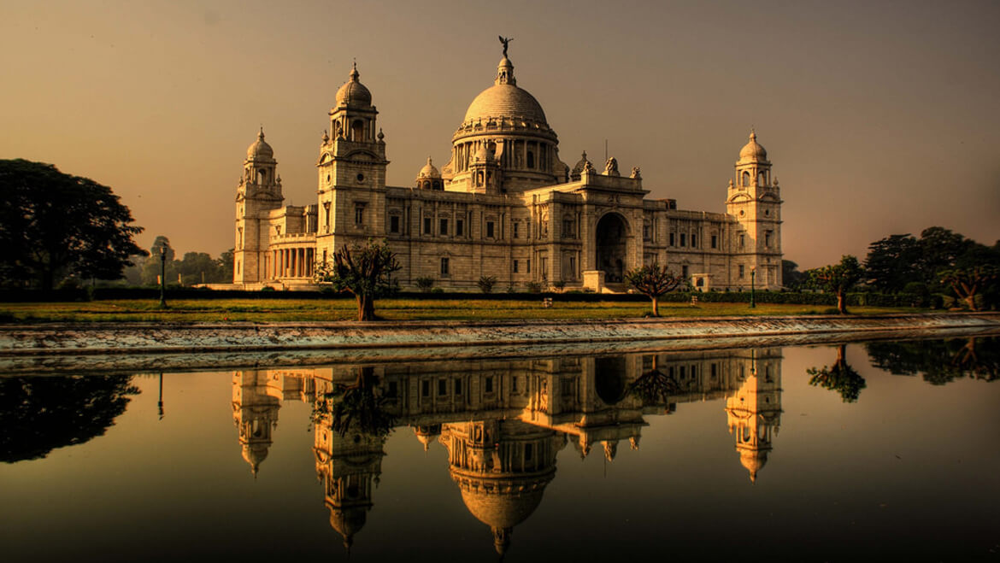
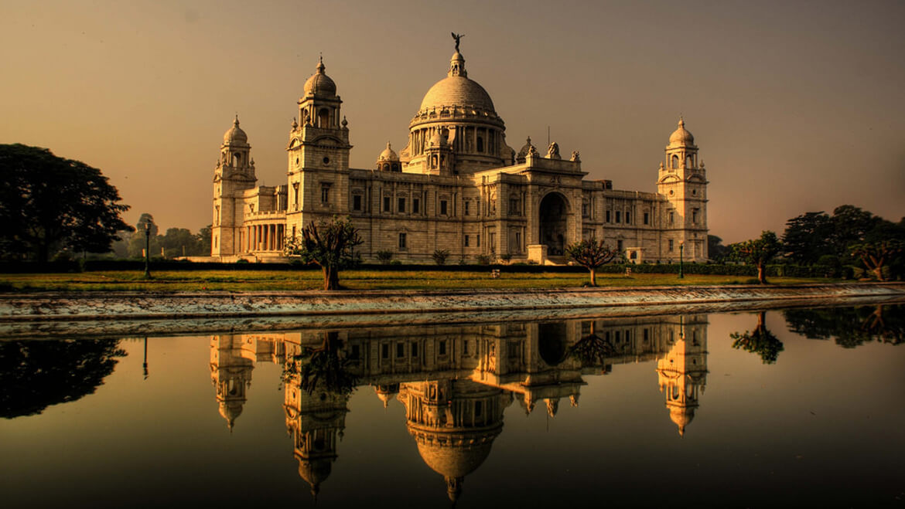
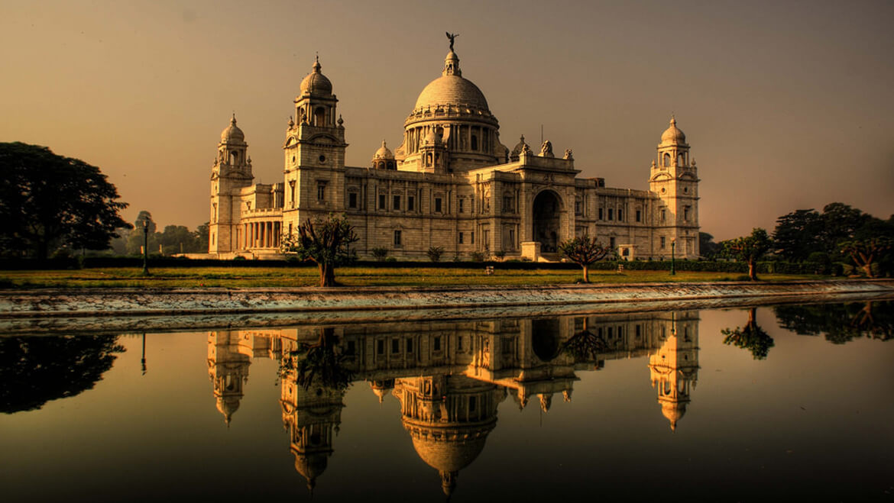
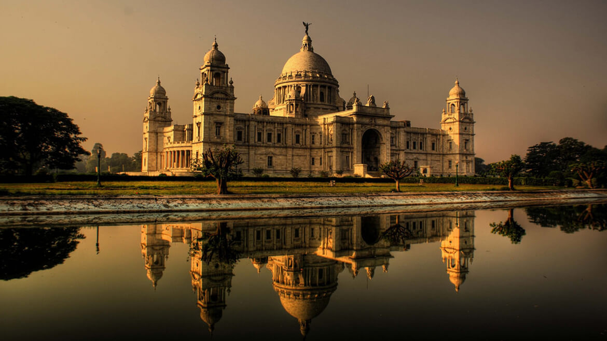

An iconic landmark of Kolkata, Howrah Bridge is a massive steel bridge constructed over the Hooghly River. It is considered to be among the longest cantilever bridges in the world. Also known as Rabindra Setu, it connects Howrah and Kolkata. It carries daily traffic of over 100,000 vehicles and countless pedestrians and is as historic as it is grand. The opulence of the bridge, however, comes alive in the night time as it is all lit up. You can also take a ferry ride as it runs between Kolkata and Howrah, from the launch ghat. The view of the city from the ferry, especially in the night, is priceless, to say the least.
Howrah Bridge was the third longest cantilever bridge at the time of its construction, but now it is the sixth longest one of its types. It was renamed as Rabindra Setu on June 14, 1965, after the name of Nobel Laureate Rabindranath Tagore. It spreads about 1500 ft over the Hooghly River and is 71 ft wide. There is a total of 8 lanes of strand road, bicycles, and pedestrians. What makes this bridge unique is the fact that it was built without a single nut or bolt and is held together by rivets.
Another relic of the British Raj in India, the Victoria Memorial is located in the heart of Kolkata, in West Bengal. This white marbled opulent structure was built in memory of Queen Victoria to celebrate her 25 years of rule over India and is almost a replica of the Victoria Memorial in London. Victoria Memorial is an iconic structure that is synonymous with the city of joy!
The memorial is surrounded by a lush green and well-maintained garden, which spreads over 64 acres and has numerous statues and sculptures in it. A sixteen-foot tall bronze statue of victory, mounted on ball bearings at the top of the memorial, serves to heighten the overall appeal and grandeur of the entire complex. Victoria Memorial is breathtaking and marvellous, especially at night, when it is illuminated. The Sound and Light shows that take place in the evening are an added delight, and a must watch. All in all, the place is a must visit for people to wish to relive the essence of the Victorian era in the modern day world.